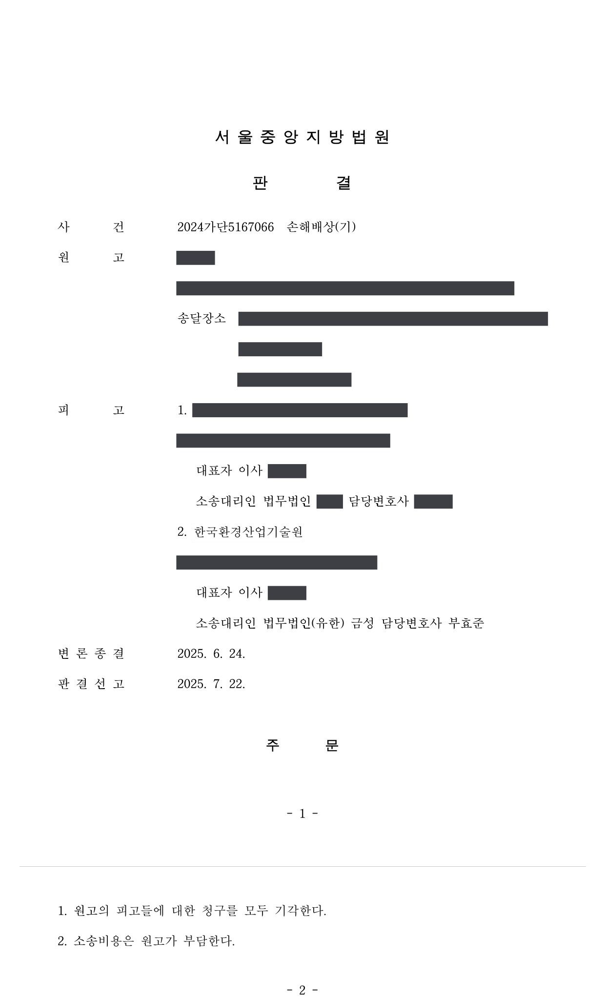

생활화학제품 안전확인 시험·검사 관련 손해배상 청구소송
서울중앙지방법원 2024가단5167066 · 담당변호사 부효준
사건의 요지
「생활화학제품 및 살생물제의 안전관리에 관한 법률」에 따른 안전확인 시험·검사 결과를 둘러싸고 사업자가 공공기관 등을 상대로 제기한 손해배상 청구의 당부가 다투어진 사건입니다.
사건의 주요 내용
생활화학제품 및 살생물제의 안전관리에 관한 법률에 따르면, 안전확인대상 생활화학제품을 제조·수입하려는 자는 지정된 시험·검사기관으로부터 제품이 안전기준에 적합한지 확인을 받고(법 제10조 제1항), 그 확인결과서 등을 첨부하여 신고하면 신고증명서 발급기관이 안전기준 적합확인 신고증명서를 발급합니다(법 시행규칙 제5조 제5항). 이 사건의 피고들은 시험·검사기관(피고 검사기관)과 신고증명서를 발급하는 공공기관(피고 발급기관)입니다.
수입 방향제 제품의 전 운영자는 2022년 5월 피고 검사기관에 확인을 신청하면서 성분·배합비 서류에 주요물질만 적고 보존제를 표시하지 않았으며, 화학물질 비함유·비사용 확약서도 제출하였습니다. 피고 검사기관은 2022년 6월 '적합' 판정의 1차 확인결과서를 발급하였습니다. 그런데 피고 발급기관은 신고 서류를 검토하여 향료에 든 사용물질의 추가 시험을 두 차례 보완 요구하였고, 피고 검사기관은 요구된 항목만 추가하여 같은 해 9월과 10월 2차·3차 확인결과서를 발급하였으며, 2022년 10월 신고증명서가 발급되었습니다.
그 뒤 상호와 대표자가 바뀌어 원고가 2023년 7월 변경신고를 하였는데, 피고 발급기관은 이 제품에 방향제 보존제로 허용되지 않은 벤조산나트륨이 들어 있다는 이유로 변경신고를 반려하였습니다. 벤조산나트륨은 전 운영자가 2차·3차 확인결과서 재발급을 요청하면서 성분·배합비 서류에 보존제로 새로 적어 낸 물질이었습니다. 원고는 피고들의 과실로 제품을 판매하지 못하였다며 예상 수익과 지출비용 상당 96,350,520원을 연대하여 배상하라고 청구하였습니다. 부효준 변호사는 피고 발급기관을 대리하였습니다.
쟁점
- 신청인이 확인결과서 재발급을 요청하면서 성분·배합비 서류에 보존제를 새로 기재하였는데도 보완 요구된 항목만 추가로 검사한 시험·검사기관에 과실이 있는지
- 보완 요구의 이행 여부만 확인하고 신고증명서를 발급한 공공기관에 업무상 과실이 있는지
원고의 주장
- 피고 검사기관은 2차·3차 확인결과서 발급 과정에서 성분·배합비 서류에 보존제로 기재된 벤조산나트륨이 부적합 물질임에도 '적합' 판정을 하였으므로 정확한 검토와 검사를 하지 않은 과실이 있다고 주장하였습니다.
- 피고 발급기관은 벤조산나트륨에 대하여 별도로 확인하지 않고 신고증명서를 발급한 과실이 있으므로, 피고들은 채무불이행 또는 불법행위책임에 따라 제품 판매 예상 수익과 인건비·원재료·배송비·세금 등 지출액 상당의 손해를 연대하여 배상하여야 한다고 주장하였습니다.
부효준 변호사의 주장
- 법령과 고시에 따라 제품의 주요물질·보존제·함량제한물질을 서식대로 구분하여 기재하고 비함유·비사용 확약서를 제출할 의무는 신청인에게 있으며, 신청인이 재발급 요청 과정에서 최초 서류와 달리 보존제 항목을 임의로 추가하면서 이를 알리지 않은 것은 신청인 측의 사정이라고 다투었습니다.
- 피고 발급기관은 신고 당시 제출된 확인결과서와 성분·배합비 서류를 검토하여 추가 시험이 필요한 사용물질을 특정해 보완을 요구하였고, 신청인이 그 보완 요구를 이행한 최종 확인결과서를 제출한 이상 최초 서류와 같은 내용이라고 신뢰하여 신고증명서를 발급한 데 업무상 과실이 없다고 주장하였습니다.
법원의 판단
법원은 안전기준 적합 여부의 확인을 받으려는 사람은 고시가 정한 서식에 따라 스스로 제품의 주요물질·보존제·함량제한물질 해당 여부를 확인하여 구분 기재하고 비함유·비사용 확약서를 제출할 의무가 있다고 보았습니다. 전 운영자의 재발급 요청은 피고 발급기관이 보완을 요구한 특정 항목의 추가 시험에 한정된 요청이었고, 피고 검사기관이 시료의 동일성을 확인받은 점, 2차·3차 확인결과서의 접수일과 확인완료일을 1차와 같게 하고 발행번호에 수정 차수를 붙인 점, 추가 항목의 수수료만 받은 점, 전 운영자가 보존제를 추가 기재한 사실을 알리지도 않고 결과서에 이의도 하지 않은 점을 들어 피고 검사기관은 시험·검사기관의 의무를 다하였다고 판단하였습니다.
피고 발급기관에 관하여는, 법령상 발급기관은 제출 자료를 검토하여 보완을 요청할 수 있고 실제로 신고 서류를 검토하여 두 사용물질의 추가 시험을 요구한 것이 위법·부당하지 않으며, 보완 요구에 따라 수정된 최종 확인결과서가 제출된 이상 최초 서류와 재발급 과정에서 낸 서류의 내용이 같다고 신뢰하고 보완 이행 여부만 확인하여 신고증명서를 발급한 데 업무상 과실이 있다고 보기 어렵다고 판단하였습니다. 원고의 피고들에 대한 청구는 모두 기각되었고 소송비용은 원고가 부담하게 되었습니다.
위 사정에 비추어 보면, 법, 시행령 및 시행규칙 등에 의하여 안전확인대상 생활화학제품이 안전기준에 따른 적합한지 여부를 확인받으려는 사람은 그 확인 신청을 함에 있어 시험·검사기관에 확인 신청 대상인 생활화학제품에 대하여 이 사건 고시에서 정한 ‘안전기준 적합 확인용 제품의 성분 및 배합비’ 서식 및 그 작성방법에 따라 스스로 해당 제품의 ‘주요물질’, ‘보존제’, ‘함량제한물질’ 등 항목 해당 여부와 그 내용을 확인하여 위 각 항목을 구분 작성하고, 만약 해당 제품에 이 사건 안전기준에서 정한 함유금지물질이 포함되어 있지 아니하고, 함량제한물질 중 제품 내 사용물질 함량기준에 해당하는 물질 외 다른 물질이 포함되어 있지 아니한 경우, 이를 확약하는 내용의 ‘화학물질의 비함유· 비사용 확약서’도 그 서식에 따라 작성하여 제출할 의무가 있다.
서울중앙지방법원 2024가단5167066 판결 이유 '3. 피고 검사기관에 대한 청구에 관한 판단 — 다.'
⑥ 위와 같이 피고 발급기관은 신청인의 안전기준 적합확인 신고 당시 제출된 제반 서류들을 검토하여 보완의 필요성과 보완 내용을 결정한 것으로 보이므로, 그와 같은 수정 보완 요구가 위법·부당한 것으로 볼 수 없는 점, ⑦ 신청인이 피고 발급기관의 위 보완 요구에 따라 피고 검사기관에게 추가 시험을 의뢰하여 위 추가 시험 결과가 반영된 내용으로 1차 확인결과서의 내용이 수정된 최종 확인결과서인 ‘적합’ 종합판정의 3차 확인결과서를 피고 발급기관에게 제출한 이상 비록 신청인이 3차 확인결과서 발급 과정에서 신청인 자신이 최초 피고 검사기관에게 제출한 이 사건 제품의 성분 및 배합비 서류 내용과 달리 방향제의 보존제로 사용허가된 물질이 아닌 벤조산나트륨을 이 사건 제품의 보존제로 표기한 성분 및 배합비 서류를 제출하였다 하더라도 피고 발급기관으로서는 신청인이 최초 피고 검사기관에게 제출한 이 사건 제품의 성분 및 배합비 서류와 3차 확인결과서 발급 과정에서 피고 검사기관에게 제출한 성분 및 배합비 서류의 내용이 동일하다고 신뢰하고, 위 수정 보완 요구의 이행 여부만을 확인하여 이 사건 신고증명서를 발급한 것을 두고 피고 발급기관에게 업무상 과실이 있다고 보기는 어려운 점 등에 비추어 보면, 원고의 피고 발급기관에 대한 청구는 이유 없다.
서울중앙지방법원 2024가단5167066 판결 이유 '4. 피고 발급기관에 대한 청구에 관한 판단'
※ 판결 이유 가운데 이 사건의 판단 기준이 된 부분을 그대로 옮긴 것으로, 당사자 이름 등은 가렸습니다.
이 사건이 보여 주는 것
생활화학제품 안전확인 절차에서 제품의 성분·배합비와 비함유·비사용 확약서를 정확하게 작성할 책임은 신청인(제조·수입자)에게 있습니다. 보완 요구에 따라 확인결과서를 다시 받는 과정에서 서류 내용을 바꾸면서 검사기관에 알리지 않으면, 그 때문에 뒤에 신고가 반려되더라도 검사기관이나 발급기관에 책임을 묻기 어렵습니다.
신고증명서를 발급하는 공공기관의 책임 범위도 분명해졌습니다. 제출된 서류를 검토하여 필요한 보완을 요구하고 그 이행을 확인하면 의무를 다한 것이고, 신청인이 바꾸어 낸 서류까지 대조하여 검증할 의무는 없다는 것입니다. 공공기관으로서는 어떤 서류를 검토하여 어떤 근거로 보완을 요구하였는지 기록을 남겨 두는 것이 분쟁에서 중요합니다.
판결문 1장

비슷한 처분을 받으셨다면
행정처분은 처분이 있음을 안 날부터 90일 이내에 행정심판이나 취소소송으로 다투어야 하고, 기간이 지나면 돌이킬 수 없는 처분은 집행정지를 서둘러야 합니다. 처분서를 받은 날짜부터 확인해 드립니다.